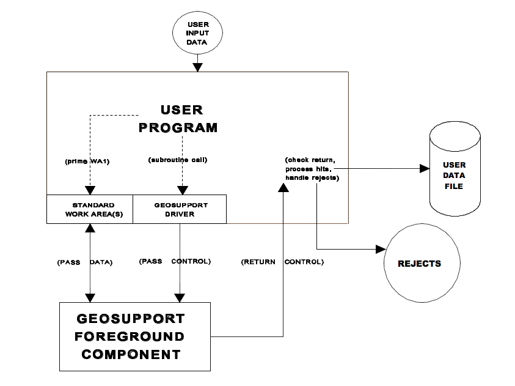

II.1 Introduction
This chapter presents an overview of the Geosupport Application Programming Interface (API), the mechanism through which a user-written application program interfaces directly with the Geosupport System. The basic architecture of the API, the user programming procedure required to utilize the API, and reject handling are described. The important distinction between one-work-area and two-work-area calls is discussed, and the long-work-area-2 option is described. The material in this chapter is general in nature. Chapter VIII discusses in detail the user programming statements and JCL required to utilize the API, and other chapters discuss application design issues specific to the various functions.
The Geosupport API consists of the following elements:
-
A Geosupport load module called the driver that the user must link-edit into the application program. The driver serves as an intermediary between the user’s application program and the Geosupport foreground software.
-
One or two standard layout work areas that the user must include in the application program and that are used to pass data between the application program and Geosupport.
-
Programming statements that the user codes in the application program utilizing the driver and work area(s) to interact with Geosupport.
With very few exceptions, the Geosupport API is identical in the batch and CICS environments. The principal exception is the name of the driver.
The driver has two principal purposes. It passes execution control from the user program to the Geosupport foreground software, which is external to the user program load module. The driver also passes addressability to the work areas (which are located within the user program) to the Geosupport foreground software, thereby enabling the foreground software to access those work areas.
User programs never read Geosupport’s internal files directly. They are read only by the Geosupport foreground software, which returns data retrieved from those files to the calling user program in the work areas. In batch applications, the user JCL for the execute step must include DD statements for the load libraries that contain the Geosupport foreground software and data. Chapter VIII describes the JCL required for batch execution, and Appendix 8 contains examples.
Figure II-1, below, illustrates the elements of the Geosupport API as just described. The illustration assumes that the user program has a data file into which it writes information obtained from successful calls to Geosupport, and another file, printed report or screen display for handling rejects.

When a user program issues a call to the driver, either one or two work areas are passed as parameters of the call. Work Area 1 (WA1) is always passed, and its length and layout are the same for all functions. Work Area 2 (WA2) may also be passed, depending on the Geosupport function being requested and the type of information needed by the user's application. The length and layout of WA2 are determined by the function and, for functions that have the ‘long Work Area 2 option’, by whether that option is specified. The distinction between one-work-area calls and two-work-area calls is discussed in Chapter II.4. The long Work Area 2 option is discussed in Chapter II.5. There is also the Auxiliary Segment option which is discussed in Chapter II.6 and the Extended Work Area 2 option which is discussed in Chapter II.7. The work areas may be Mainframe-Specific Work Areas (MSWs) or Character-Only Work areas (COWs). For a description of these formats see Appendix 12.
For the convenience of users whose programs are written in COBOL, IBM mainframe assembler, PL/1, C or NATURAL, Geosupport COPY libraries (copylibs) are maintained, containing source code layouts of each work area in each of those programming languages. The Geosupport COPY libraries are discussed in detail in Chapter VIII. The use of the Geosupport COPY libraries is optional but strongly recommended.
Note for CICS NATURAL Users: In order for Geosupport’s CICS driver to pass control to the foreground component of Geosupport properly, it must know whether the calling user program is written in NATURAL. The driver determines this by examining a Geosupport table. This table contains a list of the transaction-IDs of CICS transactions that launch NATURAL programs that call Geosupport. If the transaction-ID of such a transaction is not in the table, the driver will mistakenly assume that the program calling Geosupport is not written in NATURAL, and the transaction will terminate abnormally when the program calls Geosupport.
At DoITT, the updating of the Geosupport NATURAL transaction-ID table is the responsibility of DoITT staff. Therefore, DoITT users who have new CICS applications written in NATURAL that are to access Geosupport must inform DoITT staff, who will enter the new transaction-ID into the table. CICS NATURAL users running at other computer centers should contact GSS.